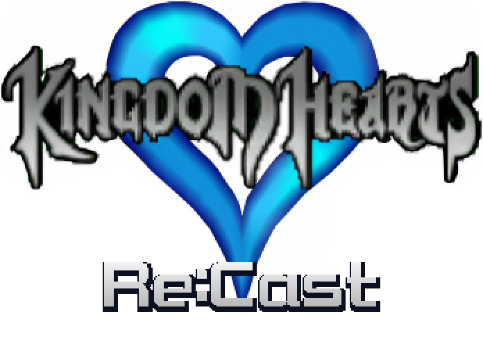
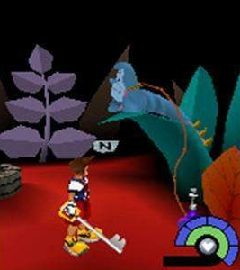
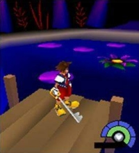
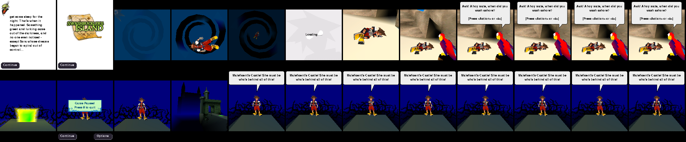
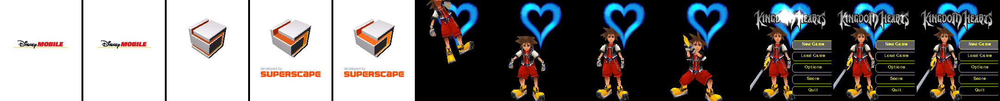
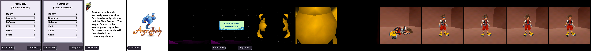
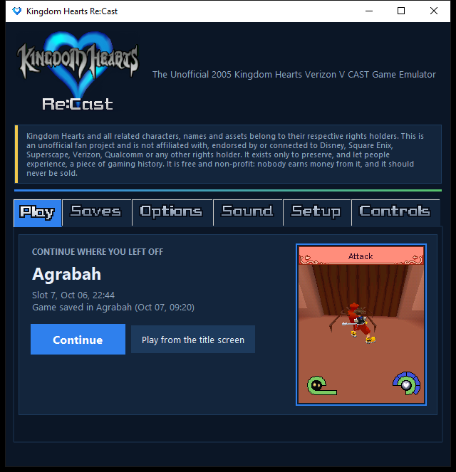
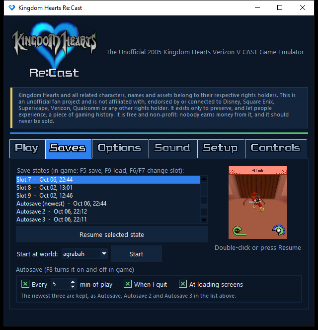
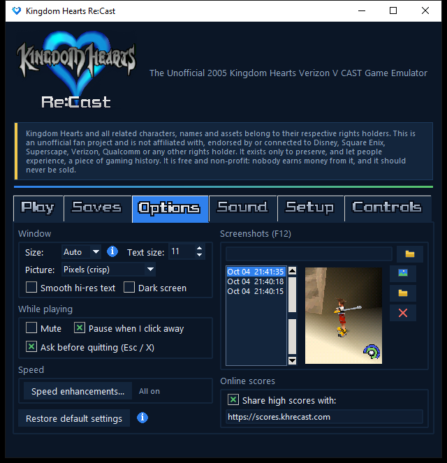
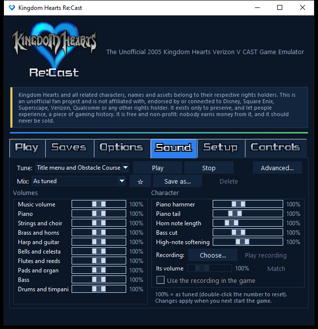

Playable on PC, with full sound, for the first time.
A lost piece of Kingdom Hearts history: the 2005 Verizon V CAST game, on Windows, Mac or Linux. One download, nothing else to install.
Free and open source
The search for chapter 2
Do you still have the phone?
The phones held one chapter at a time, and starting the next chapter deleted the old one. If someone stopped playing while Alice in Wonderland was installed, that phone may still hold the only copy.
- Any Verizon phone from the V CAST years (2005 to 2012) is a candidate
- The game launched on the LG VX8000, Samsung SCH-a890 and UTStarcom CDM8940; the LG VX8100 and VX8300 have the same 176×220 screen. The model number is printed under the battery
- Kingdom Hearts (the V CAST game) is installed on it
- Please don't reset it, delete the game or download another chapter
Not sure it is the right phone? Email anyway.


About
In 2005, Superscape and Disney Mobile made a full 3D Kingdom Hearts for Verizon's V CAST phones: Sora, the Keyblade, Maleficent's Castle, all on a phone with a 176×220 screen. The phones, the service and the store are long gone.
Re:Cast runs the game's own code, unchanged, on an emulated phone processor and recreates the phone features it relies on. It draws the real 3D, plays the music and sound effects, and carries you from world to world through the game's own chapter flow.
Playable on a PC, with full sound, for the first time.
Until now this game ran only on its original phones, on a collector's modified Zeebo console, or without any audio in an Android emulator. As far as we know, Re:Cast is the first emulator to play it with its music and sound effects in context: the game's real soundtrack and effects, in step with the action.
Features
Authentic
The game's own code
Re:Cast runs the real game program and Superscape's 3D engine, unchanged, on an emulated phone processor. It is the game itself, not a remake.
The original music and sound
The real soundtrack and sound effects, in step with the action, including the phone's compressed voice-codec effects, decoded properly. A first on PC.
Its own saves and scores
Load Game, the save points and the “post your score” screen all behave the way they did on the phone.
Play all 3 found chapters
The training area and Swashbuckler's Island, Agrabah and Maleficent's Castle, played through start to finish.
Quality of life
Save states
Snapshot anywhere with F5 and load with F9: nine slots, automatic autosaves, and backups of the game's own saves.
A launcher that remembers
A Continue button with a preview of where you left off, one-click setup, and your settings kept.
Picture filters
Crisp pixels, smooth, sharp pixels or Scale2x. Press F11 to compare them live.
Smooth hi-res text
The game's tiny 176×220 text is redrawn sharply at your window's resolution, so menus and dialogue stay crisp at any size.
A shared leaderboard
The original ranking server is long gone, so Re:Cast brings it back. Scores are shared anonymously (only the world, score, Munny, EXP and time, never who you are) so you can see how you rank. You can switch sharing off.
Everything included
One installer for Windows, Mac or Linux, with its own Python, ffmpeg and game files. No setup, no extra downloads.
Screenshots



The launcher
Re:Cast opens with a launcher that picks up where you left off, keeps your save states, and lets you set up the picture and the music before you play. It finds the game files itself the first time.




The music
The game’s music was written by composer Ian Livingstone in 2004, for a game he never played. Years later the YouTuber 13th Vessel got in touch with him, and posted the complete original soundtrack: “KINGDOM HEARTS V-Cast [Complete Original Soundtrack]”.
The video’s description holds an interview with the composer, in which he answers questions about the music. It is an interesting read if you like this soundtrack.
Download the soundtrack
The game’s music is available as audio files from KHInsider: Kingdom Hearts V CAST (Mobile) (gamerip) (2005).
If you prefer those recordings to Re:Cast’s built-in synthesizer, the game can play them instead, tune by tune. In the launcher’s Sound tab, pick the tune, Choose... the matching file, press Match to even out the volume, then tick Use the recording in the game. Re:Cast fits each recording to the game’s own length for that tune, so the game plays exactly as before; untick it to go back to the built-in music.
Download
Each file is a complete package: download it, run it, play. Saves and settings live in your user folder, so uninstalling never deletes them.
Not sure which Mac you have? Apple menu → About This Mac: “Chip: Apple M…” means Apple Silicon, “Processor: Intel” means Intel.
Help
Checking that your download is genuine (SHA-256)
The installers are not code-signed, so compare the file's SHA-256 hash with these, which are also in SHA256SUMS.txt and on GitHub. If they differ, don't run it: download it again, from the other place if you can.
Windows (PowerShell): Get-FileHash .\KH-ReCast-Windows-x64.exe · macOS: shasum -a 256 KH-ReCast-macOS-arm64.zip · Linux: sha256sum KH-ReCast-Linux-x86_64.run
KH-ReCast-Linux-aarch64.runc706f3bdd91bb98ad66fcf9a1c66e07645695a7b00b0c023ee5668e329982ea2KH-ReCast-Linux-x86_64.run4e008abc857871a3789bd94b5f16d810068e2116b65026bf7bb2a04cefb1ab3cKH-ReCast-Windows-x64.exe6f6227965ce235a02309182ca207f1f1a940db81b17031829e357784bd2c0951KH-ReCast-Windows-x86.exedaae28007c9cb2ad213624ab3cccf8e2a57a168f550063b187c4a6231244b406KH-ReCast-macOS-arm64.zip7fb84976041edf9b8cdb1292a45914c46c6a9bd6630c292b79d657a5e6bdab10KH-ReCast-macOS-x86_64.zipb1808263ea14a92743d9e9745cc96aa067a1ffb6ef526d981ccba006229705d1
Windows says “Windows protected your PC”
The installer isn't code-signed, so Windows' SmartScreen is cautious about it. Click More info, then Run anyway. It installs only for your user account and never asks for administrator rights. To remove it later, use Settings → Apps.
Mac says the app can't be opened
- Unzip the download and drag Kingdom Hearts Re-Cast into Applications.
- Right-click (or Control-click) the app, choose Open, then Open again. You only do this once.
- If it says the app is “damaged”, open Terminal and run:
xattr -dr com.apple.quarantine "/Applications/Kingdom Hearts Re-Cast.app"
Installing on Linux
Download the .run file for your computer, then in a terminal:
sh KH-ReCast-Linux-x86_64.run
It installs for your user only (no sudo) and adds Kingdom Hearts Re:Cast to your applications menu. To remove it: sh KH-ReCast-Linux-x86_64.run --uninstall. It needs a desktop Linux using glibc 2.28 or newer (not Alpine). On a 64-bit ARM machine, use the aarch64 file instead.
Where are my saves?
In a folder called .khvcemu in your home folder, kept safe across updates and uninstalls. Save states also appear in the launcher with a preview picture.
Controls
These are the keys as they come. W, A, S, D, F, Z, Q and E can be changed on the launcher's Controls tab.
| Keys | In the game |
|---|---|
| WASD / arrows / NumPad | Move (up is forward) |
| Enter / Space / 5 | Action, attack (also select and jump) |
| F / [ / * | Magic (the * is on the number pad) |
| Z / 0 | Status + items |
| Q / F1 | Pause, Continue (the left softkey) |
| E / F2 | Back, Options (the right softkey) |
| Keys | Re:Cast |
| F5 / F9 | Save / load a save state |
| F6 / F7 | Change slot (Shift+1 to 9 picks one, Shift+0 the autosave) |
| F8 | Autosave on / off (the kinds chosen on the launcher's Saves tab) |
| F10 / F12 | Mute / screenshot |
| Esc | Quit (it asks first) |
| F11 | Picture filter |
It runs slowly on my computer
Re:Cast is emulating a whole phone, and the 3D engine is demanding. Busy 3D scenes run at about real-time speed on a normal PC; older machines will drop frames rather than slow the game down.
Credits
Thank you
Re:Cast only exists because of people who found, dumped, restored, recorded and wrote about this game, often years before the emulator. These are the people and projects behind it. Re:Cast is not affiliated with any of them. If you are listed below and would like information modified or removed, please send an email.
Recovering the game
The music
Ian Livingstone
Composed the music and sound (credited as “MTS – Mediathemes & Sound”).
13th Vessel
Posted the complete original soundtrack and made the game's 3D models viewable.
Aid1043
Made the 2025 “Authentic Restoration” soundtrack and shared it on KHInsider. Their Wonderland track is the theme that plays on the Wonderland screen.
Playing and recording it
Font
Televo
Recreated the Kingdom Hearts menu font (KHMenu) for the free “Kingdom Hearts Re:Collection” set. The Re:Cast title and the launcher’s tab names are drawn in it (modified to a lower resolution).
Emulation and research
zeebulator
An open-source (GPL-3.0) Zeebo/BREW emulator by requeijaum and contributors. Re:Cast's BREW interface research builds on it.
Melange
A BREW emulator for Android by UsernameAK that can run the game without audio.
Also: the editors of the Lost Media Wiki, KHwiki and Kingdom Hearts Database, KH13, KHInsider and its forum, and the Internet Archive, who documented this game's history. If you are listed and want a link changed or removed, email us.